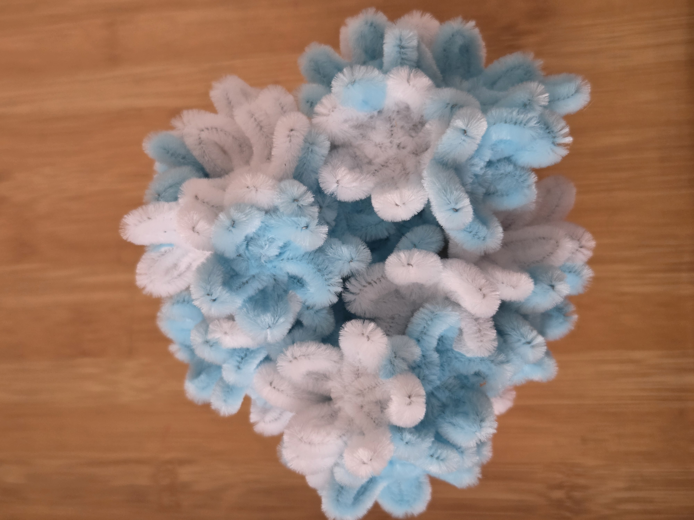
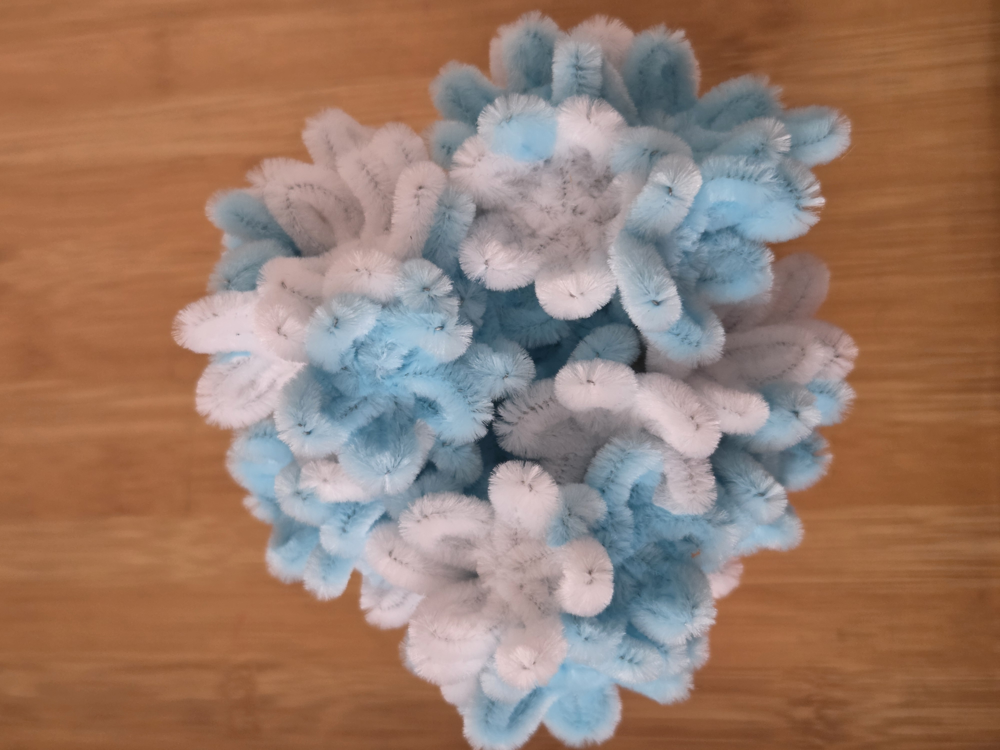

During my free time when I want to relax I pick a flower to recreate with fuzzy wire by following tutorials. This allows me to stay focused on one task or sometimes I watch a show while creating the flower.
Something I learned is that this activity takes patience and practice because it might not always turn out like the way you imagine, however, I still enjoy the final piece.
Flowers I've created
- Lily
- Hibiscus
- Gerbera dasiy
- Hydrangea
 
